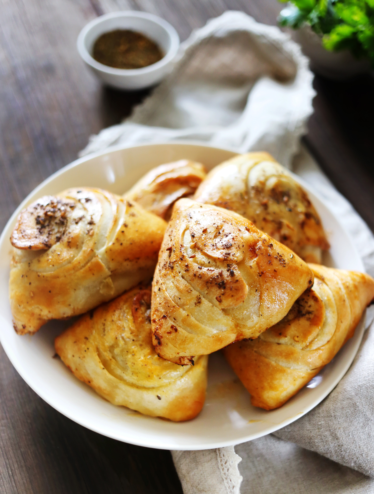

Самса — порционные пирожки с мясом, распространенные во многих азиатских и восточных странах. Они популярны не только в Узбекистане, Таджикистане и Татарстане, но и на территории всех бывших советских республик. Чаще всего самсу делают треугольной, но она бывает и круглой, и квадратной. Для пирожков используют пресное или слоеное тесто, начинка из баранины или говядины (самый популярный вариант), курицы, иногда с добавлением картофеля или тыквы. Реже встречается самса с овощной или грибной начинкой. Фарш для самсы лучше порубить самостоятельно или пропустить через мясорубку с крупной решеткой. Для сочности в фарш добавляют много лука. Из специй чаще используют черный и острый перец, зиру. Можно добавить сушеный чеснок, любимую зелень и другие приправы.
для теста:
для начинки: